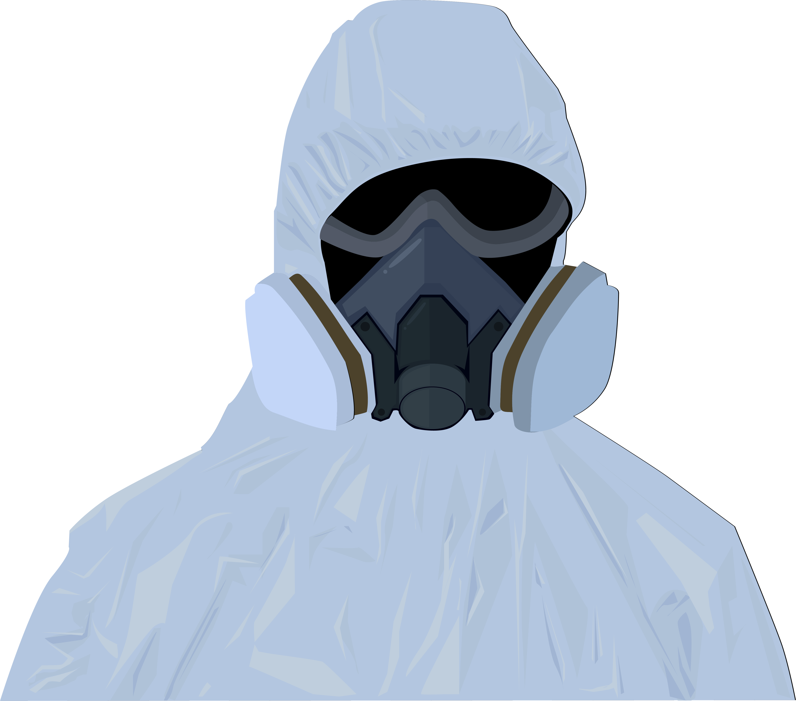

- 
-
PENGOBATAN
-
PENULARAN
-
PENCEGAHAN
-
GEJALA
PENGOBATAN
PENULARAN
PENCEGAHAN
GEJALA
GEJALA DARI COVID-19
Beberapa orang dapat memiliki suhu tubuh inti lebih rendah atau lebih tinggi dari suhu normal 37,6 derajat Fahrenheit (37 derajat Celcius), para ahli mengatakan tidak memfokuskan pada angka. "Ada banyak kesalahpahaman tentang demam. Kita semua benar-benar naik turun sedikit pada siang hari sebanyak setengah derajat atau satu derajat. Bagi kebanyakan orang 99,0 derajat atau 99,5 derajat Fahrenheit bukanlah demam," kata Dr. John Williams. Jangan mengandalkan suhu yang diambil di pagi hari. Sebagai gantinya, ambil suhu tubuh Anda di sore hari dan malam hari.
Kelelahan ekstrem bisa menjadi tanda awal virus corona. Laporan WHO menemukan bahwa hampir 40% dari hampir 6.000 orang dengan kasus yang dikonfirmasi laboratorium mengalami kelelahan. Kelelahan dapat berlanjut lama setelah virus hilang. Laporan anekdotal dari orang-orang yang telah pulih dari Covid-19 mengatakan bahwa kelelahan dan kekurangan energi terus berlanjut melewati masa pemulihan standar beberapa minggu.
Batuk adalah gejala umum lainnya, tetapi bukan seperti batuk biasa. "Itu bukan rasa geli di tenggorokan. Batuk itu mengganggu, batuk kering yang Anda rasakan jauh di dalam dada. Itu berasal dari tulang dada atau tulang dada Anda, dan Anda dapat mengatakan bahwa tabung bronkial Anda meradang atau teriritasi," jelas Schaffner. Sebuah laporan yang dikeluarkan oleh WHO pada Februari lalu menemukan lebih dari 55.924 orang dengan kasus Covid-19 yang dikonfirmasi laboratorium telah batuk berdahak, lendir kental yang kadang-kadang disebut dahak, dari paru-paru mereka.
Konsensus umum dari para kewenangan kesehatan dan ahli menyepakati bahwa virus corona dapat disebarkan oleh orang-orang yang tidak menunjukkan gejala. Sebagaimana kasus-kasus dengan gejala atau pre-simtomatis, orang-orang tanpa gejala dapat menularkan virus dengan berbagai cara, termasuk meludah, batuk, dan bersin. Infeksi juga dapat disebarkan melalui kontak langsung dengan orang lain atau kontaminasi pada permukaan benda dan objek.
PENCEGAHAN VIRUS COVID-19
Tindakan pertama yang dapat dilakukan untuk menangkal virus corona adalah dengan rajin mencuci tangan. Sebab, tangan adalah salah satu anggota tubuh yang menjadi sumber penyakit. Cuci tangan dengan durasi minimal 20 detik untuk membunuh virus corona menggunakan sabun dan air bersih yang mengalir. Setelah itu, keringkan tangan menggunakan kain yang bersih atau tisu. Tindakan pencegahan yang satu ini dianggap lebih efektif untuk membunuh kuman, bakteri, termasuk virus corona. Cuci tangan merupakan langkah yang disarankan oleh banyak pihak, termasuk Organisasi Kesehatan Dunia
Telah diketahui bahwa tangan dapat menjadi sumber penyakit sebab sering terjadi kontak dengan benda maupun orang lain. Sementara itu, virus corona disinyalir dapat masuk tubuh manusia melalui segitiga wajah yakni mata, hidung, dan mulut. Maka dari itu, hindari untuk menyentuh wajah menggunakan tangan. Apabila terpaksa harus menyentuh wajah, maka pastikan untuk mencuci tangan terlebih dahulu dengan sabun.
Terapkan etika bersin dan batuk dengan benar menggunakan siku tangan bagian dalam atau tisu bersih. Sebab, cairan yang diproduksi pada saat batuk dan bersin tersebut dapat menjadi media penularan virus corona. Apabila Anda menggunakan tisu, maka segera buang ke tempat sampah dan cuci tangan menggunakan sabun hingga bersih dan kering kembali.
Virus corona tidak menyebar melalui udara. Namun, penggunaan masker dapat meminimalisir penularan virus corona. Sebab, virus corona dapat menyebar melalui droplets dan dapat masuk ke dalam tubuh melalui selaput lender seperti mata, mulut, dan hidung. Masker juga dapat digunakan ketika seseorang dalam kondisi yang kurang sehat. Hindari untuk menggunakan satu masker secara berulang-ulang. Sebab, masker dapat mengandung berbagai jenis kuman, bakteri, dan virus setelah dipakai.
Cara sederhana guna menangkal virus corona yang kelima adalah hindari interaksi secara langsung seperti berpelukan, berjabat tangan, dan lain sebagainya. Dengan menghindari kontak kulit dengan orang lain, maka Anda dapat mengurangi penyebaran virus corona.
Barang pribadi milik orang lain dapat saja meningkatkan risiko penularan virus corona. Sebab meskipun tidak nampak gejala, virus ini dapat menginfeksi tubuh manusia hingga berstatus sebagai silent carrier yang membawa dan menularkan virus corona covid-19 kepada orang lain. Maka dari itu, selalu gunakan barang sendiri dan hindari untuk meminjam barang pada orang lain. Hal tersebut merupakan langkah yang dapat dilakukan untuk menekan laju penyebaran virus corona yang berbahaya.
Social atau physical distancing adalah salah satu imbauan yang sering digemakan oleh berbagai pihak. Sebab, dengan menjaga jarak antara satu sama lain dipercaya dapat mengurangi risiko penyebaran virus corona. Selalu perhatikan jarak fisik dengan orang lain yakni minimal 1 meter. Langkah ini dapat diterapkan saat berada di tempat umum ataupun saat di luar rumah guna menangkal virus masuk ke dalam tubuh dan menyebabkan masalah kesehatan yang serius.
Cuci selalu bahan makanan yang diperoleh sebelum mengolahnya. Sebab, pada bahan makanan selalu saja terdapat kemungkinan adanya kuman, bakteri, hingga virus corona. Anda dapat mencuci bahan makanan sebelum disimpan di dalam lemari pendingin dengan menggunakan larutan hidrogen peroksida ataupun cuka yang dapat membunuh bakteri, kuman, dan virus dengan cukup efektif.
Virus corona dapat menempel pada permukaan benda yang sering terjadi interaksi. Maka dari itu, bersihkan selalu perabotan rumah secara rutin.Bila perlu, semprotkan cairan disinfektan setiap pagi dan sore hari yakni sebelum dan setelah beraktivitas guna membunuh virus corona.
Tidak hanya melakukan tindakan pencegahan di luar jaringan tubuh, namun Anda juga perlu melakukan tindakan pencegahan dari dalam tubuh. Caranya adalah dengan meningkatkan imunitas atau sistem kekebalan tubuh terhadap berbagai virus termasuk virus corona covid-19. Beberapa cara yang dapat dilakukan untuk meningkatkan imunitas tubuh adalah dengan melakukan aktivitas fisik secara rutin dan mengonsumsi makanan sehat yang dapat meningkatkan sistem kekebalan tubuh.
PENGOBATAN GEJALA VIRUS COVID-19
Disarankan untuk minum banyak air putih agar tubuh tetap terhidrasi. Beberapa pedoman menyarankan sekitar 2 liter sehari namun kebutuhan cairan tiap orang bervariasi jadi tetap minum ketika merasa haus. Anda bisa menggunakan urine sebagai indikator hidrasi. Jika berwarna kuning terang dan jernih maka tubuh terhidrasi dengan baik. Hindari soda dan alkohol karena akan membuat Anda lebih mudah dehidrasi.
Jika mengalami kondisi ringan, pasien bisa mengonsumsi parasetamol untuk mengurangi gejala yang disebabkan oleh infeksi seperti demam. Beberapa pakar lebih menyarankan parasetamol daripada ibuprofen sebagai penurun demam sebab ada kekhawatiran dapat memperburuk gejala.
Ketika tubuh terinfeksi virus, Anda akan merasakan mudah lelah dan mengantuk karena sistem imun berjuang melawan infeksi. Jika tidak beristirahat yang cukup, tubuh bisa terserang demam. Disarankan untuk tidak berolahraga berat namun bisa beraktivitas ringan karena dapat membantu untuk tidur di malam hari.
Anda harus mengawasi gejala dan mencari pertolongan medis saat tidak ada perbaikan dan kondisi menurun secara signifikan. Adapun tanda-tandanya termasuk kesulitan bernapas, nyeri atau tekanan terus menerus di dada, lemah, dan kebiruan di bibir. Apabila sangat mendesak, hubungi hotline segera dan penanganan operator COVID-19.
Jika mengalami gejala, harus segera mengisolasi diri dan tidak keluar rumah selama 14 hari. Jika memungkinkan, bedakan kamar tidur dan toilet yang terpisah. Hindari menggunakan alat makan yang sama dengan anggota keluarga lain saat sedang isolasi.